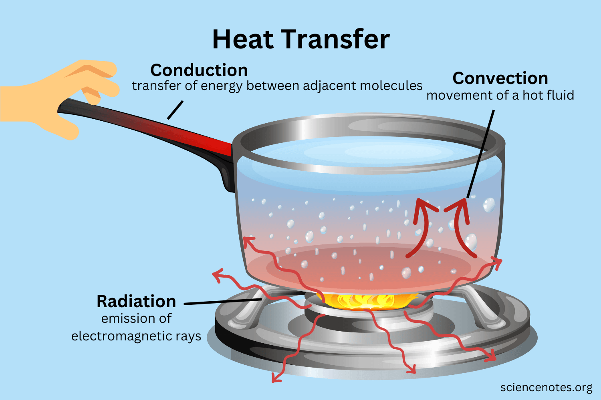
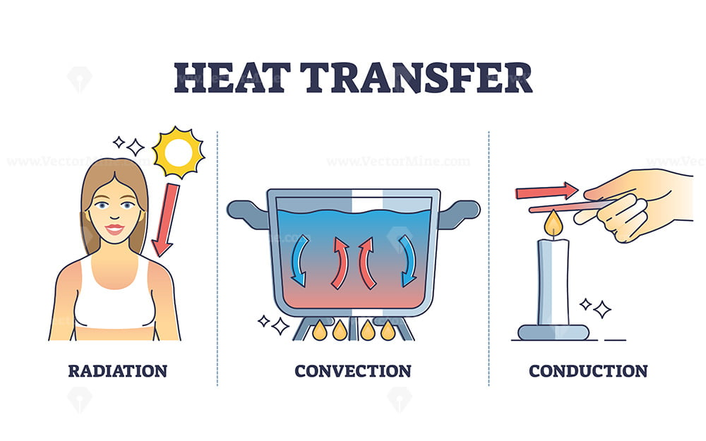
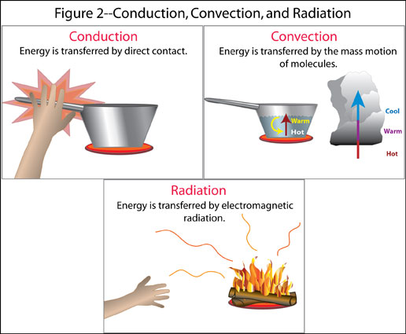

Heat transferring is used in three different ways. The first one is conduction that needs to have a physical contact between them, this happens because heat is transferred molecule by molecule, and this can happen with gasses, liquid, and solids.
The second one is convection that is when it involves moving liquid or gaseous molecule, when you move them the heat moves with the molecule; when the molecules touch the surface that is hotter or colder, heat is transferred to the molecules, than when you move the molecules the heat gets spread between the molecules.
The last one is the Radiation that is transferred by a vacuum, all the materials transmit radiation in all the directions, and that has nothing to do with its temperature but because its molecules move randomly; this makes energy because these movements include protons (+) and electrons (-) that makes electromagnetic radiation.
Climate change impacts heat transfer to contribute to tornadoes by making them even stronger and more frequent of this happening. The storms that give birth to the tornadoes, happen to stabilize the atmosphere and that can increase global warming instantly. Climate change is also making tornadoes happen more often since it increases the number of severe storms.


